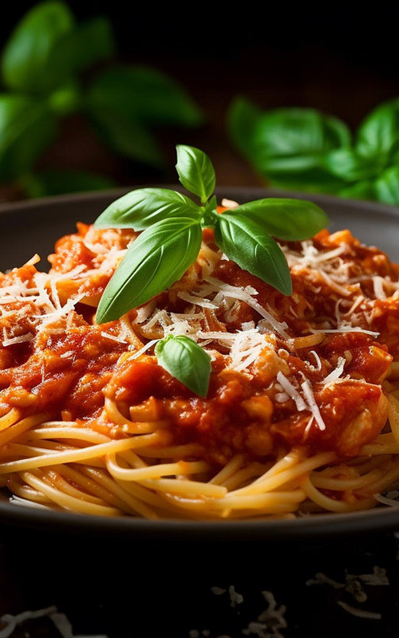
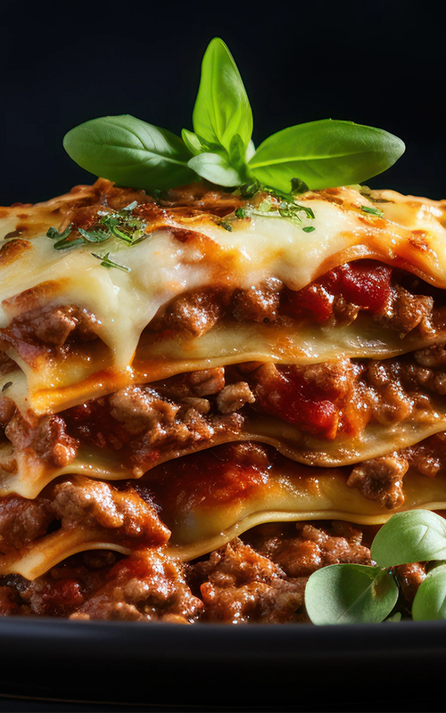
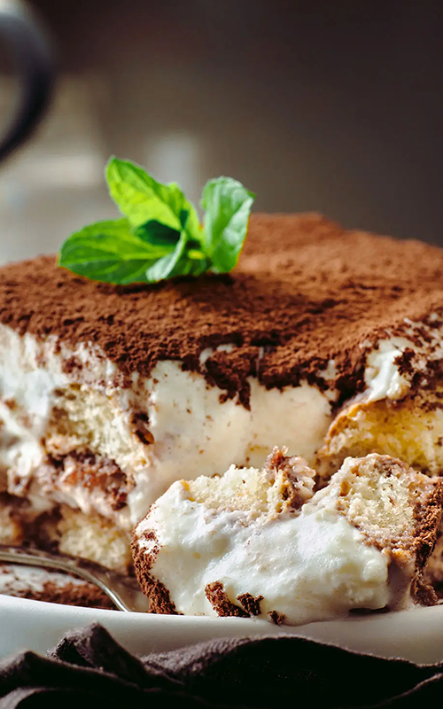
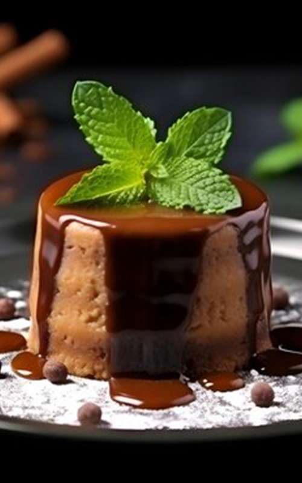

<!DOCTYPE html>
<html lang="en">
<head>
<meta charset="UTF-8">
<title>La Cucina Italiana | Teddy Trimino 2026/title>

<!-- Picturefill Scripts -->
<script src="js/picturefill.js"></script>
<script src="js/matchmedia.js"></script>

<style>

/* ------------------------------
   GLOBAL STYLES
--------------------------------*/
body{
    margin:0;
    padding:0;
    background-color:#000; /* black background */
}

wrapper{
    width:100%;
    min-width:800px;
    max-width:1820px;
    display:block;
    background-color:#fff;
    margin:0 auto;
}

/* ------------------------------
   HEADER
--------------------------------*/
.hero-header{
    width:100%;
    height:300px;
    background-image: url("images/headerimage.png");
    background-size: cover;
    background-position: center;
    background-repeat: no-repeat;
    position: relative;
}

.hero-header::before{
    content:"";
    position:absolute;
    top:0;
    left:0;
    width:100%;
    height:100%;
    background: rgba(0,0,0,0.4);
    z-index:1;
}

.site-title{
    position: absolute;
    top: 50%;
    left: 50%;
    transform: translate(-50%, -50%);
    color: #fff;
    font-family: 'Georgia', serif;
    font-size: 3rem;
    text-align: center;
    letter-spacing: 2px;
    z-index: 2;
}

/* ------------------------------
   MAIN CONTENT
--------------------------------*/
main{
    padding:40px 20px;
    background:#fff;
}

.dish{
    margin-bottom:60px;
    text-align:center;
}

.dish h2{
    font-family:'Georgia', serif;
    font-size:2rem;
    color:#8B1E1E;
    margin-bottom:20px;
    letter-spacing:1px;
}

.dish img{
    width:90%;
    max-width:420px;
    border-radius:12px;
    box-shadow:0 4px 15px rgba(0,0,0,0.25);
}

/* ------------------------------
   FOOTER
--------------------------------*/
footer{
    padding:20px;
    font-family:Arial, sans-serif;
    font-size:0.8rem;
    color:#333;
    line-height:1.4;
}

/* ------------------------------
   MEDIA QUERIES
--------------------------------*/

/* Tablet – 2 columns */
@media (min-width: 50em){
    main{
        display:grid;
        grid-template-columns: 1fr 1fr;
        gap:40px;
    }
}

/* Laptop – 3 columns */
@media (min-width: 65em){
    main{
        grid-template-columns: 1fr 1fr 1fr;
    }
}

/* Desktop – 4 columns */
@media (min-width: 80em){
    main{
        grid-template-columns: repeat(4, 1fr);
    }
}

</style>
</head>

<body>

<wrapper>

<!-- HEADER -->
<header class="hero-header">
    <h1 class="site-title">La Cucina Italiana</h1>
</header>

<!-- MAIN CONTENT -->
<main>

<!-- Pasta -->
<figure class="dish">
  <h2>Pasta</h2>
  <div data-picture data-alt="Pasta">
      <div data-src="1-column-layout/pasta-small.png"></div>
      <div data-src="2-column-layout/pasta-medium.png" data-media="(min-width: 32em)"></div>
      <div data-src="3-column-layout/pasta-large.png" data-media="(min-width: 72em)"></div>
    <noscript>
      
    </noscript>
  </div>
</figure>

<!-- Pizza -->
<figure class="dish">
  <h2>Pizza</h2>
  <div data-picture data-alt="Pizza">
      <div data-src="1-column-layout/pizza-small.png"></div>
      <div data-src="2-column-layout/pizza-medium.png" data-media="(min-width: 32em)"></div>
      <div data-src="3-column-layout/pizza-large.png" data-media="(min-width: 72em)"></div>
    <noscript>
      
    </noscript>
  </div>
</figure>

<!-- Lasagna -->
<figure class="dish">
  <h2>Lasagna</h2>
  <div data-picture data-alt="Lasagna">
      <div data-src="1-column-layout/lasagna-small.png"></div>
      <div data-src="2-column-layout/lasagna-medium.png" data-media="(min-width: 32em)"></div>
      <div data-src="3-column-layout/lasagna-large.png" data-media="(min-width: 72em)"></div>
    <noscript>
      
    </noscript>
  </div>
</figure>

<!-- Cannoli -->
<figure class="dish">
  <h2>Cannoli</h2>
  <div data-picture data-alt="Cannoli">
      <div data-src="1-column-layout/cannoli-small.png"></div>
      <div data-src="2-column-layout/cannoli-medium.png" data-media="(min-width: 32em)"></div>
      <div data-src="3-column-layout/cannoli-large.png" data-media="(min-width: 72em)"></div>
    <noscript>
      
    </noscript>
  </div>
</figure>

<!-- Tiramisu -->
<figure class="dish">
  <h2>Tiramisu</h2>
  <div data-picture data-alt="Tiramisu">
      <div data-src="1-column-layout/tiramisu-small.png"></div>
      <div data-src="2-column-layout/tiramisu-medium.png" data-media="(min-width: 32em)"></div>
      <div data-src="3-column-layout/tiramisu-large.png" data-media="(min-width: 72em)"></div>
    <noscript>
      
    </noscript>
  </div>
</figure>

<!-- Panna Cotta -->
<figure class="dish">
  <h2>Panna Cotta</h2>
  <div data-picture data-alt="Panna Cotta">
      <div data-src="1-column-layout/pannacotta-small.png"></div>
      <div data-src="2-column-layout/pannacotta-medium.png" data-media="(min-width: 32em)"></div>
      <div data-src="3-column-layout/pannacotta-large.png" data-media="(min-width: 72em)"></div>
    <noscript>
      
    </noscript>
  </div>
</figure>

</main>

<!-- FOOTER -->
<footer>
© 2025, Teddy Trimino  
This is a fictitious web page created solely for the purpose of education and training. All products and people associated with this web page are also fictitious. Any resemblance to real brands, products, or people is purely coincidental. Information provided about the product is also fictitious and should not be construed to be representative of actual products on the market in a similar product category.
</footer>

</wrapper>

</body>
</html>
